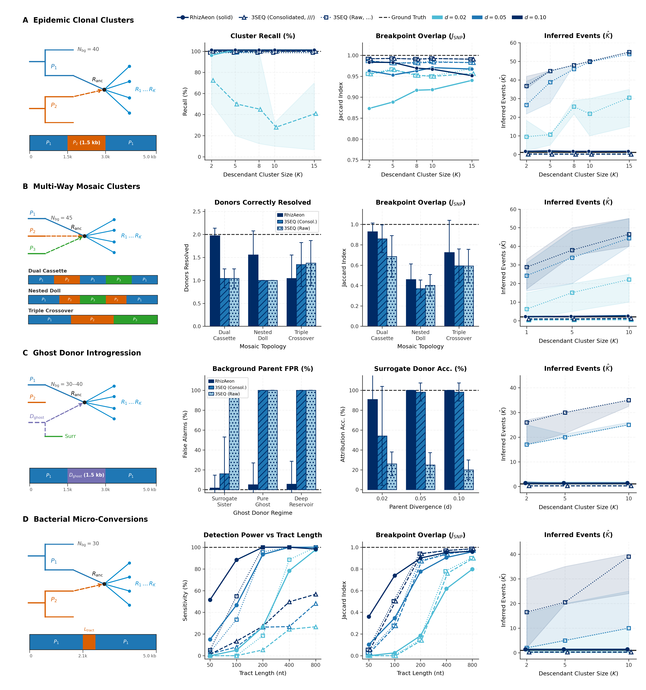
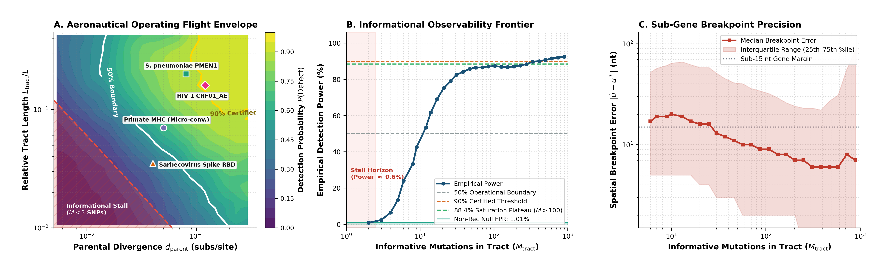
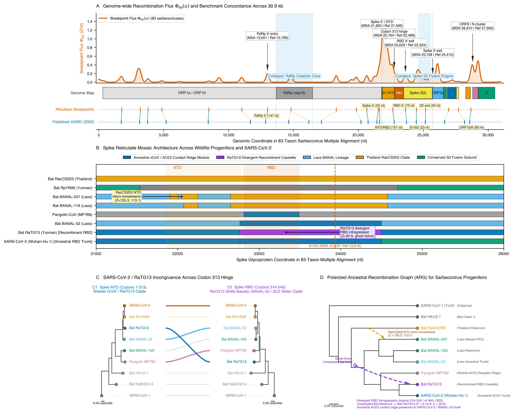

Why recombination detection has been stuck between two extremes
Homologous recombination and horizontal gene transfer splice mosaic chromosomes together—breaking bifurcating trees and inflating $dN/dS$ scans. Existing detectors force a stark choice:
Optimizing maximum-likelihood trees across candidate breakpoints works on single genes, but required downsampling 78 sarbecovirus genomes to 18 and 4.5 days of cluster compute.
Testing $\binom{N}{3}$ triplets is fast on small alignments, but counts a single ancestral crossover in a 10-taxon clade 14.37 times on average and assumes two sampled parents.
Projects $K$ landmarks into metric coordinates and tracks every sequence as a continuous trajectory—mapping 78 sarbecovirus genomes in 2.6 seconds and 2.22 Mb chromosomes in 36.1 seconds.
Rate bursts, ancestral clades, ghost donors, and three-parent mosaics

RhizAeon collapses the shared mosaic into $1.01 \pm 0.08$ ancestral events (98.8% exact) vs. $14.37$ calls in 3SEQ.
(C–D) Orthogonal residual projection detects extinct "ghost" donors (89.2% F1) and three-parent mosaics (90.0% full triplet recovery).
1.01% false-positive rate and iterative scrubbing across 1,000,000 simulated genomes

78–83 whole sarbecovirus genomes in 2.6 seconds (vs. 4.5 days in GARD)

GARD breakpoints from Lytras et al. (2022) (median offset 99.0 nt; 9–12 nt at Spike NTD and S1/S2 junctions).
(C–D) Pinpoints the Laotian bat BANAL-20-52 / RaTG13 receptor-binding domain cassette exchange at a 60,000× speedup.
From 2.22 Mb pneumococcal chromosomes to 86 bp HLA micro-conversions
The same continuous metric engine scales across four orders of magnitude in tract length—from multi-kilobase bacterial transfers to sub-exon immunological gene conversions:
Across 240 multidrug-resistant isolates (Croucher et al., 2011), RhizAeon maps 392 horizontal transfer tracts (~35× faster than Gubbins), recovering the exact drug-resistance cassettes at pbp2x, pbp1a, pbp2b, folA, folP, and the capsule switch locus cps.
Across 379 primate MHC Class I alleles (Parham et al., 1995), dyadic matched filters resolve 103 short Exon 2/3 conversions (86–150 bp)—including the classic inter-locus HLA-B*46:01 cassette spliced between HLA-B*15:01 and HLA-C*01:02.
Run RhizAeon in your browser, Python notebook, or command line
Drop any FASTA alignment into veg.github.io/rhizaeon-code to explore interactive breakpoint profiles and donor maps locally.
Built in Rust with SIMD acceleration and wrapped via PyO3 (github.com/veg/rhizaeon-code) for high-throughput genomic pipelines.
All simulated benchmarks, empirical alignments, and validation scripts are archived at 10.5281/zenodo.23600798.